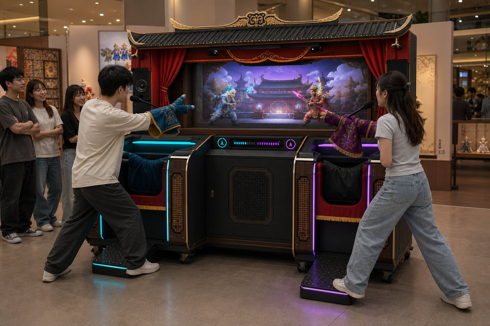
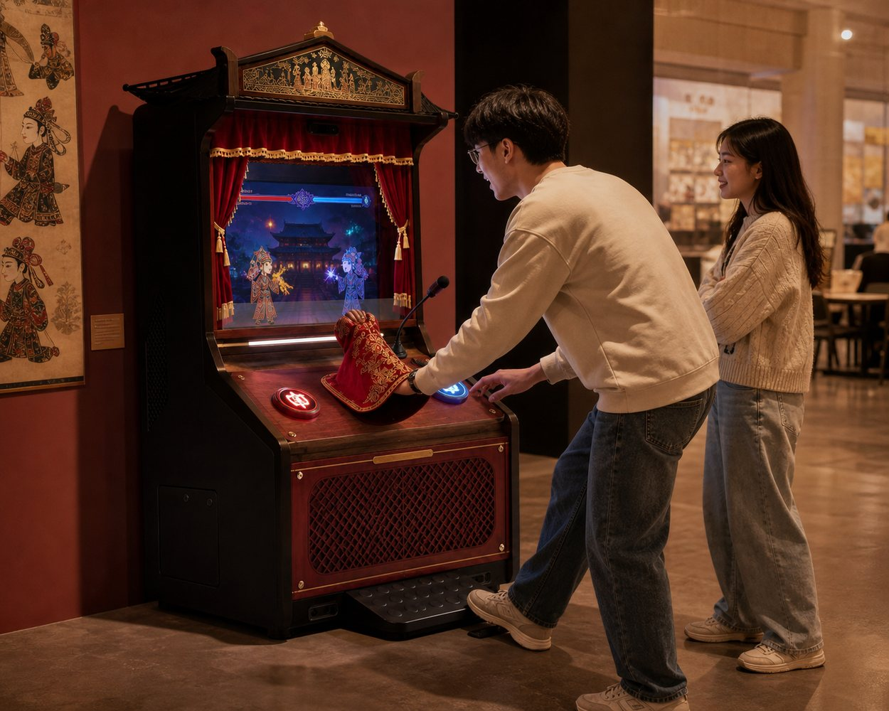
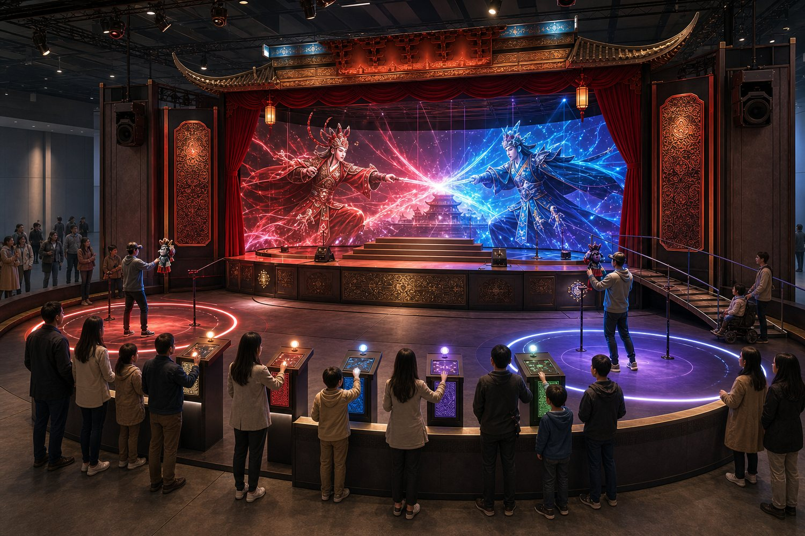

傳統布袋戲
延續「人在幕後、偶在台前」的操偶空間與口白、音樂、武打表演。

創意起點
布袋戲融合操偶、口白、音樂、戲劇與工藝。《掌中決》讓玩家成為操偶師，以雙手動作、聲音和即時決策完成一場武俠演出，讓文化不只是機台外觀，而是遊戲本身。
創意來源
延續「人在幕後、偶在台前」的操偶空間與口白、音樂、武打表演。
以生命值、攻防、反擊與必殺技建立容易理解的對決節奏。
依角色與戰況產生登場詩、即時旁白、招式名稱及多重結局。
保留快速加入、現場圍觀與輪流挑戰，讓遊戲成為公共演出。
核心設計概念
玩家同時是操偶師、演員與共同編劇；AI 則是對手、旁白、配音助手與戰鬥導演。
玩家以手臂與戲偶姿勢操作角色
語音辨識後轉成角色聲線與氣勢值
攻擊、防禦、閃避及合體必殺技
AI 依戰況生成衝突、轉折與結局
現場投票改變氣勢與下一幕劇情
04・三種機台規格
三款共用 AI 內容平台與角色資料，依空間規模增加雙人設備、體感範圍及觀眾參與。

單人快玩／雙人輪替
咖啡店・校園・文化館・快閃店雙人即時對戰與合作
商場・博物館・文化中心・品牌活動
玩家＋AI＋觀眾共同展演
大型展覽・文化節・旗艦商場・觀光場域05・可操作動態雛形
以網頁按鈕模擬實體戲偶姿勢、語音辨識及觀眾投票。先選角色，再開始對決。
AI 正在等待兩位操偶師登台……
03 觀眾介入劇情
06・宣傳示範影片
約三十秒宣傳片依序呈現三種機台規格與核心玩法，搭配繁體中文旁白及原創配樂。